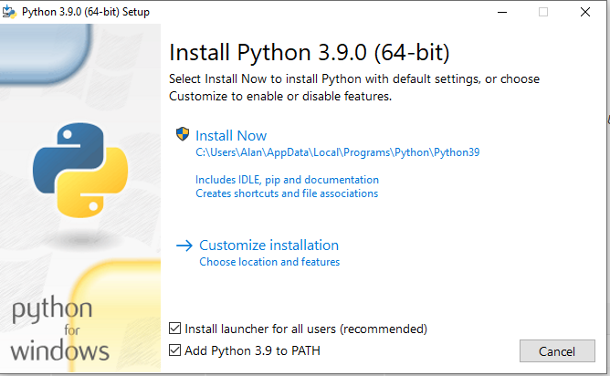

This package requires Python 3.7 or greater.#
Verifying The Installed Python Version Number#
To check that you have the correct version of Python 3 installed, open a command window and type:
python3 -V
For Windows, you may need to type:
python -V
The Python version is displayed:
python3
Python 3.7.2 (default, Dec 31 2018, 14:25:33)
[GCC 8.2.0] on linux
Type "help", "copyright", "credits" or "license" for more information.
>>>
For Windows users, this may look something like this:
C:\Users\Alan>python
Python 3.9.0 (tags/v3.9.0:9cf6752, Oct 5 2020, 15:34:40) [MSC v.1927 64 bit (AMD64)] on win32
Type "help", "copyright", "credits" or "license" for more information.
>>>
If you need to install Python 3:
INSTALLING PYTHON#
Windows Users#
To install Python 3, go to the Python home page, and download the latest Python 3 distribution for your operating system.
If there is a checkbox to add Python 3 to your path during the installation process, check it before installing.

Linux Users#
Raspberry Pi Raspbian Users#
If your copy of Raspbian is using Python 3.7 or greater, you should be all set to proceed.
Ubuntu and Other Debian Based Linux Distributions#
You may need to install pip3. To check, open a terminal and type:
which pip3
If a path to pip3 is not reported, you will need to install it.
Open a terminal window and type:
sudo apt-get install pip3-python
You should then make sure you have the latest version by typing:
sudo pip3 install -U pip
For All Other Linux Distributions#
Refer to your distribution's instructions.
Mac Users#
Python 3.7.2 or greater is required.
- Install Python 3 from https://www.python.org/downloads/ or via homebrew
- Download get-pip.py from https://bootstrap.pypa.io/get-pip.py and install (this should already be installed if Python was installed from python.org or homebrew):
curl -O https://bootstrap.pypa.io/get-pip.py
sudo python3 get-pip.py
Verify The Python Installation#
Use the procedure above to verify that you have successfully installed the correct version of Python for your computer.
Copyright (C) 2022 Alan Yorinks. All Rights Reserved.